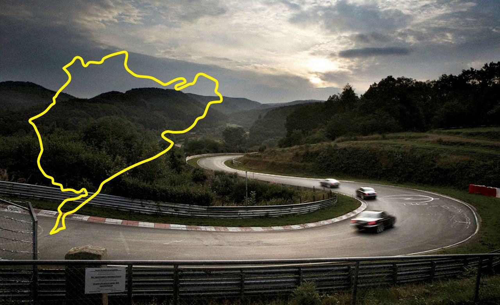
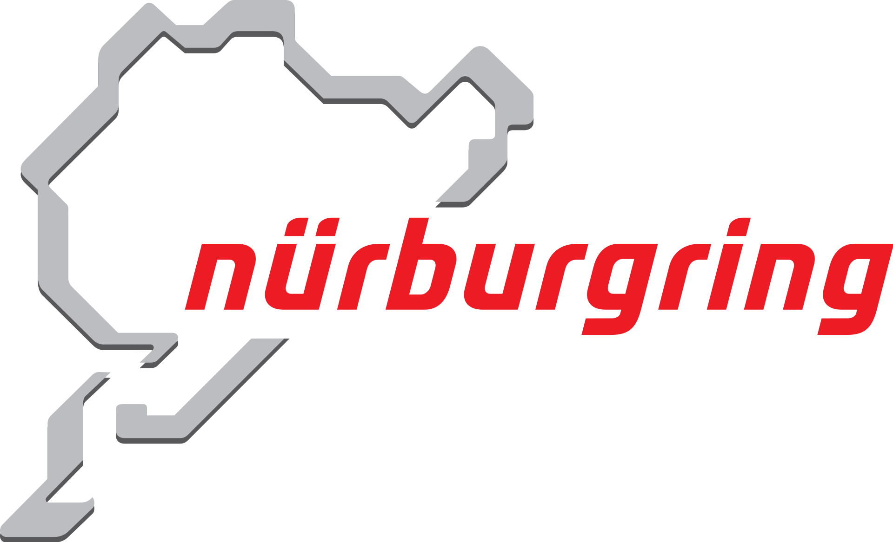

Nürburgring
Tor wyścigowy położony w Niemczech, w miejscowości Nürburg, w kraju związkowym Nadrenia-Palatynat.
Obecnie w poważniejszych, międzynarodowych imprezach jest używana skrócona wersja toru, stworzona w

latach osiemdziesiątych. Istnieje też starsza, dużo dłuższa i trudniejsza trasa, zwana Nordschleife.
Zbudowana w latach 20. XX w. trasa biegnie wokół średniowiecznego zamku i miejscowości Nürburg w górach Eifel.
Jest wciąż używana. Ze względu na olbrzymią liczbę zakrętów i pułapek jest uważana za jeden z najtrudniejszych i najbardziej wymagających torów wyścigowych na świecie.
Jeden z najbardziej znanych kierowców Formuły 1, Jackie Stewart, nazwał tę trasę Green Hell (Zielone Piekło).
Historia
We wczesnych latach dwudziestych na publicznych drogach w górach Eifel były organizowane wyścigi ADAC Eifelrennen.
Były one jednak niebezpieczne i mało popularne. Postanowiono więc stworzyć nowy tor wyścigowy w górach Eifel.
Tor został zaprojektowany przez firmę Eichler Architekturbüro z Ravensburga, a jego budowa trwała od września 1925 do wiosny 1927 r.
Tor miał długość 28 265 m (17,5 mili), jego szerokość wynosiła od 8 do 9 metrów, a liczba zakrętów 174.
Tor składał się z dwóch części: Südschleife („pętla południowa”) długości 7747 m oraz Nordschleife („pętla północna”) długości 22 810 m.
Po jego ukończeniu odbywały się tam wyścigi ADAC Eifelrennen oraz Grand Prix Niemiec. Pod koniec lat 20. XX w. tor stracił nieco na znaczeniu.
Po II wojnie światowej na tor powróciły najważniejsze imprezy: Grand Prix Niemiec (jako część mistrzostw świata Formuły 1).
W 1953 r., wprowadzono wyścig 1000-km. W 1970 r. zastąpił go wyścig 24-godzinny.

W latach 60. tor stawał się coraz bardziej niebezpieczny ze względu na coraz większe prędkości osiągane przez samochody wyścigowe.
Kierowcy postanowili zbojkotować wyścigi na torze Nürburgring, aby zostały wprowadzone zmiany konstrukcyjne.
Podczas gdy tor był modyfikowany, GP Niemiec przeniesiono na tor Hockenheimring.
Mimo przeprowadzonych zmian i wprowadzenia środków bezpieczeństwa, Nürburgring był wciąż zbyt niebezpieczny i długi na przeprowadzanie wyścigów Formuły 1.
W 1975 r. Niki Lauda ustanowił rekord przejazdu po Nordschleife, pokonując dystans 22,835 km w czasie poniżej 7 minut (6:58,6).
Także on odniósł tam najpoważniejszy wypadek w swojej karierze wyścigowej. W 1981 r. rozpoczęły się prace nad zupełnie nowym torem o długości okrążenia 4,5 km (2,8 mili).
W tym samym czasie Nordschleife zostało skrócone do 20,8 kilometrów. Na skróconym odcinku rekordowo szybko pojechał Stefan Bellof, który dystans ten pokonał
w czasie 6:11,13 w porsche 956, co daje średnią 201,7622 km/h. 29 czerwca 2018 r. niemiecki kierowca wyścigowy Timo Bernhard ustanowił nowy rekord toru wynoszący 5:19,546 min. jadąc porsche 919 Hybrid.
W roku 1984 został ukończony i oddany do użytku nowy odcinek toru, zwany GP-Strecke. Teraz spełniał już normy bezpieczeństwa.
Odbywały się tam wyścigi Formuły 1, Grand Prix Niemiec i Grand Prix Europy. W 2002 roku tor został wydłużony do 5148 metrów.